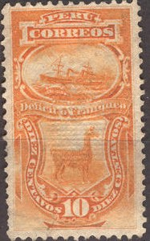

(Double overprint 'PIURA' and 'PERU', reduced size)
Return To Catalogue - Peru - Fiscal stamps - Local stamps
Note: on my website many of the
pictures can not be seen! They are of course present in the
catalogue;
contact me if you want to purchase the catalogue.

5 c orange 10 c orange 20 c blue 50 c brown
With various overprints:
(Double overprint 'PIURA' and 'PERU', reduced size)
Various overprints exist. WARNING: many of these overprints have been forged and even bogus overprints exist. Example of a bogus overprint:

(Bogus overprint)

1 c brown
Various overprints exist (see examples above).
Non issued local stamp?

This stamp with overprint 'FRANQUEO' is actually a normal postage
stamp (listed there).
5 S green 10 S lilac Surcharged (1902)
1 c on 10 S lilac
5 c on 10 S green

1 c brown (2 shades of brown were issued) 2 c brown (3 shades of brown were issued) 5 c brown (2 shades of brown were issued) 10 c brown (3 shades of brown were issued) 10 c green (1936) 50 c brown (2 shades of brown were issued) 1 S brown (1921) 2 S brown (1921) With violet 'FRANQUEO 1916' and value in fancy letters (changed to postage stamps)
2 c on 1 c brown 2 c on 5 c brown 2 c on 10 c brown 2 c on 50 c brown
Besides some overprints 'GOBIERNO' on postage stamps from 1889 to 1902 , the first 'real' official stamps were issued in 1909.
1 c red 1 c brown (1914?) 10 c brown 10 c violet (1914?) 50 c olive Overprinted 'FRANQUEO 1916'
1 c red (green overprint) 2 c (green) on 10 c brown 2 c (red) on 50 c olive 10 c brown (overprint green)
5 c violet (smaller size) 20 c green 50 c brown
(Reduced sizes)
1 c red 2 c red 10 c orange 20 c blue 50 c red 1 S brown
(Reduced size)
1 c brown 20 c blue
4 c green 40 c red 1 S green
These stamps exist with overprint 'TELEGRAFO' (1904). They also exist with an anchor overprint (see picture above).
Several 'officially sealed' labels with inscription 'CIERRE OFICIAL' were issued from 1903 to 1924 (11 different types).
Examples:
(Reduced sizes)
(Unlisted type?)
The following values were issued: 1 c lilac, 2 c yellow, 5 c blue, 10 c lilac, 20 c red and 50 c green. In 1903/04 some surcharges were applied: 1 c on 20 c red, 1 c on 50 c green and 5 c on 10 c lilac.

2 c blue on yellow 5 c green 10 c red (on white or yellow) 20 c violet 50 c red
On the 10 c, 20 c and 50 c, the value inscription at the sides is vertical, on the 2 c and 5 c it is horizontal. This issue exists with various overprints (sorry, no picture available yet).
In 1883 some postcards were issued (sorry, no picture available yet).

{kind=link}
{kind=link}
{kind=link}